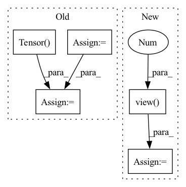

Pattern ID :30491

Before Change
self.roi = RoIPool( (self.roi_size, self.roi_size),self.spatial_scale)
def forward(self, x, rois, roi_indices):
roi_indices = torch.Tensor(roi_indices).float()
rois = torch.Tensor(rois).float()
if x.is_cuda:
roi_indices = roi_indices.cuda()
rois = rois.cuda()
indices_and_rois = torch.cat([roi_indices[:, None], rois], dim=1)
xy_indices_and_rois = indices_and_rois[:, [0, 1, 2, 3, 4]]
indices_and_rois = xy_indices_and_rois.contiguous()
// 利用建议框对公用特征层进行截取
pool = self.roi(x, indices_and_rois)
pool = pool.view(pool.size(0), -1)
After Change
roi_scores = self.score(fc7)
roi_cls_locs = roi_cls_locs.view(n, -1, roi_cls_locs.size(1))
roi_scores = roi_scores.view(n, -1, roi_scores.size(1))
return roi_cls_locs, roi_scores
class Resnet50RoIHead(nn.Module):
In pattern: SUPERPATTERN
Frequency: 4
Non-data size: 5
Instances
Fragment ID: 90240547
Project Name: bubbliiiing/faster-rcnn-pytorch
Commit Name: d456f02a402fd8cf8db1d991aa612439b3c0ffb2
Time: 2021-01-30
Author: 47347516+bubbliiiing@users.noreply.github.com
File Name: nets/classifier.py
M Class Name: VGG16RoIHead
N Class Name: VGG16RoIHead
M Method Name: forward(5)
N Method Name: forward(4)
M Parent Class: nn.Module
N Parent Class: nn.Module
M File Name: nets/classifier.py
N File Name: nets/classifier.py
M Start Line: 31
M End Line: 39
N Start Line: 33
N End Line: 59
'>
Before Change
self.roi = RoIPool( (self.roi_size, self.roi_size),self.spatial_scale)
def forward(self, x, rois, roi_indices):
roi_indices = torch.Tensor(roi_indices).float()
rois = torch.Tensor(rois).float()
if x.is_cuda:
roi_indices = roi_indices.cuda()
rois = rois.cuda()
indices_and_rois = torch.cat([roi_indices[:, None], rois], dim=1)
xy_indices_and_rois = indices_and_rois[:, [0, 1, 2, 3, 4]]
indices_and_rois = xy_indices_and_rois.contiguous()
// 利用建议框对公用特征层进行截取
pool = self.roi(x, indices_and_rois)
fc7 = self.classifier(pool)
After Change
roi_cls_locs = self.cls_loc(fc7)
roi_scores = self.score(fc7)
roi_cls_locs = roi_cls_locs.view(n, -1, roi_cls_locs.size(1))
roi_scores = roi_scores.view(n, -1, roi_scores.size(1))
return roi_cls_locs, roi_scores
'>
Fragment ID: 90240532
Project Name: bubbliiiing/faster-rcnn-pytorch
Commit Name: d456f02a402fd8cf8db1d991aa612439b3c0ffb2
Time: 2021-01-30
Author: 47347516+bubbliiiing@users.noreply.github.com
File Name: nets/classifier.py
M Class Name: Resnet50RoIHead
N Class Name: Resnet50RoIHead
M Method Name: forward(5)
N Method Name: forward(4)
M Parent Class: nn.Module
N Parent Class: nn.Module
M File Name: nets/classifier.py
N File Name: nets/classifier.py
M Start Line: 68
M End Line: 77
N Start Line: 82
N End Line: 107
'>
Before Change
self.index_max = torch.sort(self.weight_read, descending=True)[1].cpu()[:,:self.num_prediction]
for i_track in range(self.num_prediction):
present = present_temp
prediction_single = torch.Tensor().cuda()
ind = self.index_max[:, i_track]
info_future = self.memory_fut[ind]
info_total = torch.cat((state_past, info_future.unsqueeze(0)), 2)
input_dec = info_total
state_dec = zero_padding
for i in range(self.future_len):
output_decoder, state_dec = self.decoder(input_dec, state_dec)
displacement_next = self.FC_output(output_decoder)
coords_next = present + displacement_next.squeeze(0).unsqueeze(1)
prediction_single = torch.cat((prediction_single, coords_next), 1)
present = coords_next
input_dec = zero_padding
// Iteratively refine predictions using context
for i_refine in range(1):
pred_map = prediction_single + 90
pred_map = pred_map.unsqueeze(2)
indices = pred_map.permute(0, 2, 1, 3)
// rescale between -1 and 1
indices = 2 * (indices / 180) - 1
output = F.grid_sample(scene_2, indices, mode="nearest")
output = output.squeeze(2).permute(0, 2, 1)
state_rnn = state_past
output_rnn, state_rnn = self.RNN_scene(output, state_rnn)
prediction_refine = self.fc_refine(state_rnn).view(dim_batch, 40, 2)
prediction_single = prediction_single + prediction_refine
prediction = torch.cat((prediction, prediction_single.unsqueeze(1)), 1)
return prediction
After Change
prediction_refine = self.fc_refine(state_rnn).view(-1, 40, 2)
prediction = prediction + prediction_refine
//pdb.set_trace()
prediction = prediction.view(dim_batch, self.num_prediction, 40, 2)
return prediction
def write_in_memory(self, past, future):
'>
Fragment ID: 90240521
Project Name: marchetz/mantra-cvpr20
Commit Name: 04d7a063354c991d5aaa36f28a63df2ebbee9f78
Time: 2020-01-18
Author: francescom394@gmail.com
File Name: models/model_memory_IRM.py
M Class Name: model_memory_IRM
N Class Name: model_memory_IRM
M Method Name: forward(3)
N Method Name: forward(3)
M Parent Class: nn.Module
N Parent Class: nn.Module
M File Name: models/model_memory_IRM.py
N File Name: models/model_memory_IRM.py
M Start Line: 123
M End Line: 179
N Start Line: 129
N End Line: 190
'>
Before Change
self.index_max = torch.sort(self.weight_read, descending=True)[1].cpu()
for i_track in range(self.num_prediction):
present = present_temp
prediction_single = torch.Tensor().cuda()
ind = self.index_max [:, i_track]
//ablation study
// prediction_single = self.memory_count[ind]
// prediction = torch.cat((prediction, prediction_single.unsqueeze(1)), 1)
info_future = self.memory_fut[ind]
info_total = torch.cat((state_past, info_future.unsqueeze(0)), 2)
input_dec = info_total
state_dec = zero_padding
for i in range(self.future_len):
output_decoder, state_dec = self.decoder(input_dec, state_dec)
displacement_next = self.FC_output(output_decoder)
coords_next = present + displacement_next.squeeze(0).unsqueeze(1)
prediction_single = torch.cat((prediction_single, coords_next), 1)
present = coords_next
input_dec = zero_padding
prediction = torch.cat((prediction, prediction_single.unsqueeze(1)), 1)
return prediction
def write_in_memory(self, past, future):
After Change
prediction = torch.cat((prediction, coords_next), 1)
present = coords_next
input_dec = zero_padding
prediction = prediction.view(dim_batch, self.num_prediction, self.future_len, 2)
return prediction
def write_in_memory(self, past, future):
'>
Fragment ID: 90240543
Project Name: marchetz/mantra-cvpr20
Commit Name: 04d7a063354c991d5aaa36f28a63df2ebbee9f78
Time: 2020-01-18
Author: francescom394@gmail.com
File Name: models/model_decoder.py
M Class Name: model_decoder
N Class Name: model_decoder
M Method Name: forward(2)
N Method Name: forward(2)
M Parent Class: nn.Module
N Parent Class: nn.Module
M File Name: models/model_decoder.py
N File Name: models/model_decoder.py
M Start Line: 128
M End Line: 166
N Start Line: 125
N End Line: 162